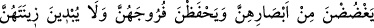
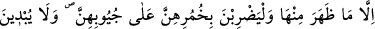
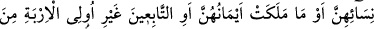
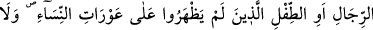
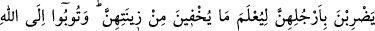
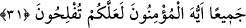

MÜ’MİN ERKEK VE
MÜ’MİN KADINLARA SÖYLE
30. (Ey Muhammed!) Mü’min erkeklere, gözlerini (harama) dikmemelerini,
ırzlarını da korumalarını söyle. Çünkü bu, kendileri için daha temiz bir davranıştır.
Şüphesiz Allah, onların yapmakta olduklarından haberdardır.
31. Mü’min kadınlara da söyle: Gözlerini (harama bakmaktan) korusunlar;
namus ve iffetlerini esirgesinler. Görünen kısımları müstesnâ olmak üzere,
ziynetlerini teşhir etmesinler. Baş örtülerini, yakalarının üzerine (kadar) örtsünler.
Kocaları, babaları, kocalarının babaları, kendi oğulları, kocalarının oğulları, erkek
kardeşleri, erkek kardeşlerinin oğulları, kız kardeşlerinin oğulları, kendi kadınları
(mü’min kadınlar), ellerinin altında bulunanlar (câriyeleri), erkeklerden, âilenin
kadınına şehvet duymayan hizmetçi vb. tâbi kimseler, yahut henüz kadınların gizli
kadınlık husûsiyetlerinin farkında olmayan çocuklardan başkasına ziynetlerini
göstermesinler. Gizlemekte oldukları ziynetleri anlaşılsın diye ayaklarını yere
vurmasınlar (Dikkatleri üzerine çekecek tarzda yürümesinler). Ey mü’minler! Hep
birden Allah’a tevbe edin ki kurtuluşa eresiniz.
Ey Muhammed! “Mü’min erkeklere, gözlerini (harama) dikmemelerini, ırzlarını da
korumalarını söyle.” Onlara söyle gözlerini fitneye sebeb olacak haram şeylere
kapatsınlar.